colorify: creation and modification of color/gradient palettes
Source:R/colorify.R, R/colorify_pal.R
colorify.RdThe main colorify function can be used to generate or take colors that can then be modified with the same function call. See the vignette for extended examples.
Palette names are stripped of whitespace and lowered for name matching. All RColorBrewer and Viridis palettes are included. All grDevices plotting functions are provided as palettes, simply use: colors = "rainbow", "heat", "terrain", "topo" or "cm". Viridis is recommended for (continuous) color-blind friendly paletets. Okabe-Ito is recommended for discrete distinct colors (up to 8, generate if more colors are required).
Addition of values (.v) happens before multiplication with factors (.f). Intuitively, all given values are expected to be within range (0, 100), values will be scaled between (0, 1), as hsv() and rgb2hsv(maxColorValue = 1) require.
Note that parameter call order within the function call matters, see examples and vignette.
A wrapper function around colorify to
turn it into a palette function compatible with
discrete_scale and scale_fill_gradientn.
Usage
colorify(
n = NULL,
colors = character(0),
colours = colors,
colors_lock = NULL,
colors_names = character(0),
colors_map = numeric(0),
nn = n,
hf = 1,
sf = 1,
lf = 1,
rf = 1,
gf = 1,
bf = 1,
hv = 0,
sv = 0,
lv = 0,
rv = 0L,
gv = 0L,
bv = 0L,
hmin = 0L,
smin = 0L,
lmin = 0L,
rmin = 0L,
gmin = 0L,
bmin = 0L,
hmax = 100L,
smax = 100L,
lmax = 100L,
rmax = 100L,
gmax = 100L,
bmax = 100L,
alpha = 1,
seed = 42L,
order = 1,
plot = FALSE,
export = FALSE,
verbose = TRUE,
...
)
colorify_pal(
colors = character(0),
colors_lock = NULL,
hf = 1,
sf = 1,
lf = 1,
rf = 1,
gf = 1,
bf = 1,
hv = 0,
sv = 0,
lv = 0,
rv = 0L,
gv = 0L,
bv = 0L,
hmin = 0L,
smin = 0L,
lmin = 0L,
rmin = 0L,
gmin = 0L,
bmin = 0L,
hmax = 100L,
smax = 100L,
lmax = 100L,
rmax = 100L,
gmax = 100L,
bmax = 100L,
alpha = 1,
seed = 42L,
order = 1,
verbose = TRUE,
...
)Arguments
- n
integer, default: NULL, else amount of colors to get, if palette selected and more colors requested they will be generated
- colors
character (vector), combination of selecting palette(s) by name (options: see display_palettes()), and/or vector of R color names and/or color hexcodes
- colours
colors
- colors_lock
numeric/boolean, default: NULL, numerical or logical index of colors (not) to be modified, if logical length != colors it will be cut or filled with TRUE/FALSE, prefix with '!' for logical vectors and '-' for numerical vectors to get inverse, see examples. If nn %% length(colors) == 0, i.e. if nn divisive by amount of colors without rest, set repeat given locking pattern
- colors_names
character, default: character(0), else return named vector of final colors
- colors_map
numeric, default numeric(0), else vector of n values for colors to make gradient map between and return function
- nn
integer (vector), default: n, else amount(s) of colors to output as gradient(s), after completing palette for n colors, if Inf return a callable function(n) generating colors
- hf
hue factor, default: 1, multiply values by factor, proportional to base value of 1
- sf
saturation factor, default: 1, multiply values by factor, proportional to base value of 1
- lf
lightness/brightness factor, default: 1, multiply values by factor, proportional to base value of 1
- rf
red factor, default: 1, multiply values by factor, proportional to base value of 1
- gf
green factor, default: 1, multiply values by factor, proportional to base value of 1
- bf
blue factor, default: 1, multiply values by factor, proportional to base value of 1
- hv
hue value, default: 0, add value to values, linear from base value of 0 to a maximum value of 100
- sv
saturation value, default: 0, add value to values, linear from base value of 0 to a maximum value of 100
- lv
lightness/brightness value, default: 0, add value to values, linear from base value of 0 to a maximum value of 100
- rv
red value, default: 0, add value to values, linear from base value of 0 to a maximum value of 100
- gv
green value, default: 0, add value to values, linear from base value of 0 to a maximum value of 100
- bv
blue value, default: 0, add value to values, linear from base value of 0 to a maximum value of 100
- hmin
hue minimum threshold, default: 0, expected range (0, 100)
- smin
saturation minimum threshold, default: 0, expected range (0, 100)
- lmin
lightness/brightness minimum threshold, default: 0, expected range (0, 100)
- rmin
red minimum threshold, default: 0, expected range (0, 100)
- gmin
green minimum threshold, default: 0, expected range (0, 100)
- bmin
blue minimum threshold, default: 0, expected range (0, 100)
- hmax
hue maximum threshold, default: 0, expected range (0, 100)
- smax
saturation maximum threshold, default: 0, expected range (0, 100)
- lmax
lightness/brightness maximum threshold, default: 0, expected range (0, 100)
- rmax
red maximum threshold, default: 0, expected range (0, 100)
- gmax
green maximum threshold, default: 0, expected range (0, 100)
- bmax
blue maximum threshold, default: 0, expected range (0, 100)
- alpha
numeric, sets color alpha values
- seed
integer, default: 42, set seed for generation of colors (n > given colors (palettes)) and colors ordering (see order)
- order
default: 1, numeric (vector) to adjust colors order, -1: reverse order, 0: seeded random order, >1: shift order, c(-1, >1): reverse then shift order, or numeric vector as many colors to set custom order (if longer, vector shortened to n colors)
- plot
default: FALSE, if TRUE or string, plot pie chart of color palette, if 'i' in string then plot image instead of pie, if 'l' in string plot color index as labels
- export
default: FALSE, if TRUE: export = getwd(), if export = "string/", save hexcodes, rgb, and hsl values to export/colorify.csv
- verbose
default: TRUE, mentions if and how many colors are generated
- ...
Use the ellipsis parameter to set color space and interpolate for grDevices::colorRampPalette()
Details
Either generate theoretically maximally different colors, select an available R grDevices palette and/or modify the colors of the given gradient/palette
See also
vignette("Introduction to coloRify")
Browse vignettes with vignette("Introduction to coloRify")
Examples
## if parameters identical, change seed to change generation
colorify(10, plot = TRUE, seed = 1)
#> 10 colors generated
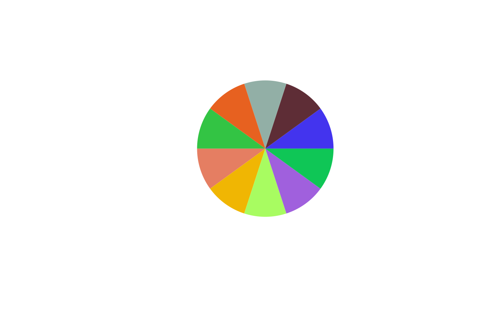
#> [1] "#4334EEFF" "#5E2D36FF" "#92AFA6FF" "#E76120FF" "#33C444FF" "#E57E62FF"
#> [7] "#F0B603FF" "#A8FC61FF" "#A060DDFF" "#0FC656FF"
colorify(10, plot = TRUE, seed = 42)
#> 10 colors generated
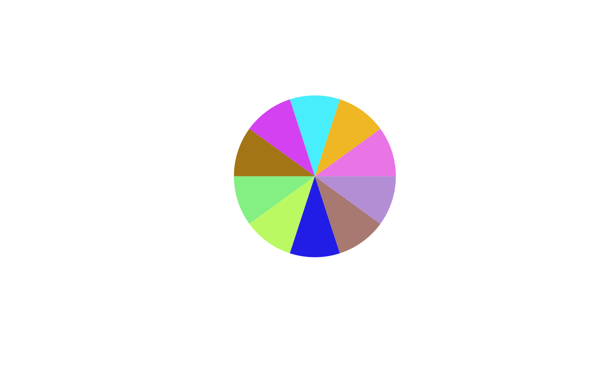
#> [1] "#E974E6FF" "#EEB723FF" "#48EEFCFF" "#D341F1FF" "#A37515FF" "#84EF83FF"
#> [7] "#BBF963FF" "#221DE6FF" "#A77971FF" "#B38ED5FF"
## set colors, generate additional up to n
colorify(colors = c("red", "white", "blue"), n = 5, plot = TRUE)
#> 2 colors generated
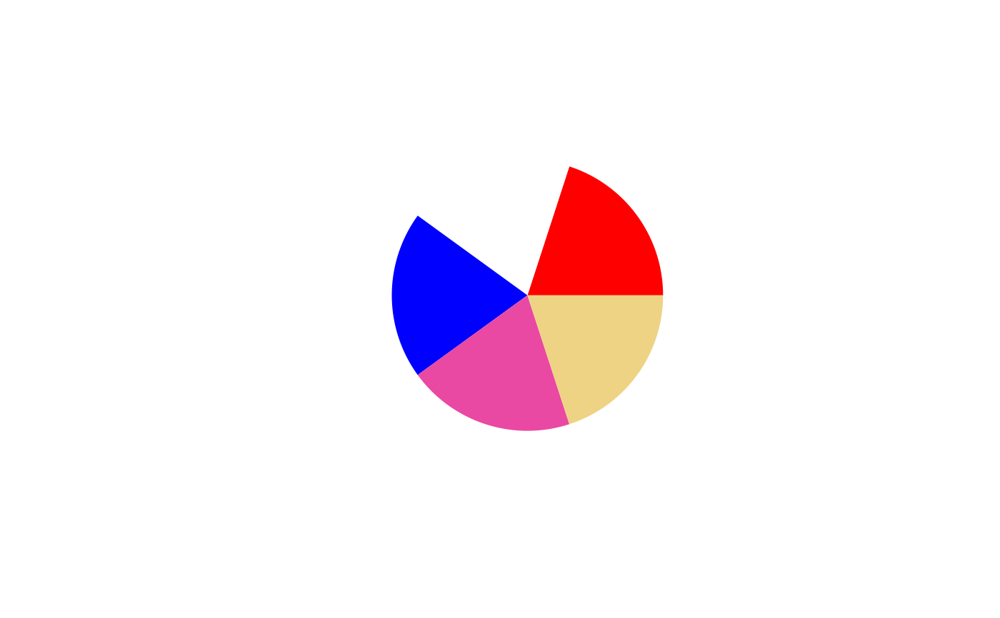
#> [1] "#FF0000FF" "#FFFFFFFF" "#0000FFFF" "#E948A3FF" "#EED384FF"
## create gradients
colorify(colors = c("orange", "red", "white", "blue", "orange"), nn = 100, plot = TRUE)
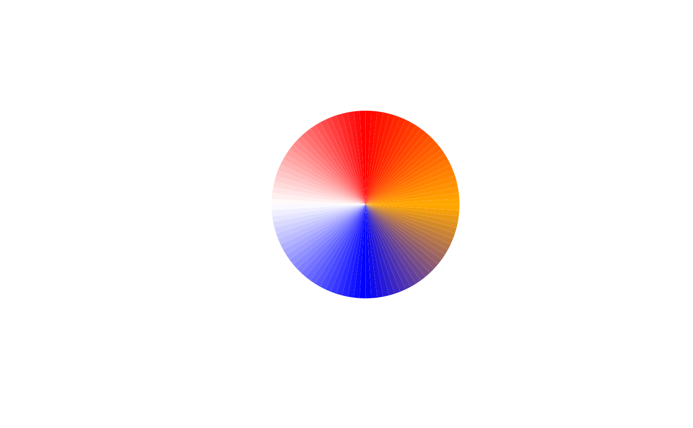
#> [1] "#FFA500FF" "#FF9E00FF" "#FF9700FF" "#FF9100FF" "#FF8A00FF" "#FF8300FF"
#> [7] "#FF7D00FF" "#FF7600FF" "#FF6F00FF" "#FF6900FF" "#FF6200FF" "#FF5B00FF"
#> [13] "#FF5500FF" "#FF4E00FF" "#FF4700FF" "#FF4100FF" "#FF3A00FF" "#FF3300FF"
#> [19] "#FF2C00FF" "#FF2600FF" "#FF1F00FF" "#FF1800FF" "#FF1200FF" "#FF0B00FF"
#> [25] "#FF0400FF" "#FF0202FF" "#FF0C0CFF" "#FF1717FF" "#FF2121FF" "#FF2B2BFF"
#> [31] "#FF3636FF" "#FF4040FF" "#FF4A4AFF" "#FF5555FF" "#FF5F5FFF" "#FF6969FF"
#> [37] "#FF7373FF" "#FF7E7EFF" "#FF8888FF" "#FF9292FF" "#FF9D9DFF" "#FFA7A7FF"
#> [43] "#FFB1B1FF" "#FFBCBCFF" "#FFC6C6FF" "#FFD0D0FF" "#FFDADAFF" "#FFE5E5FF"
#> [49] "#FFEFEFFF" "#FFF9F9FF" "#F9F9FFFF" "#EFEFFFFF" "#E5E5FFFF" "#DADAFFFF"
#> [55] "#D0D0FFFF" "#C6C6FFFF" "#BCBCFFFF" "#B1B1FFFF" "#A7A7FFFF" "#9D9DFFFF"
#> [61] "#9292FFFF" "#8888FFFF" "#7E7EFFFF" "#7373FFFF" "#6969FFFF" "#5F5FFFFF"
#> [67] "#5454FFFF" "#4A4AFFFF" "#4040FFFF" "#3636FFFF" "#2B2BFFFF" "#2121FFFF"
#> [73] "#1717FFFF" "#0C0CFFFF" "#0202FFFF" "#0705F7FF" "#120BECFF" "#1C12E2FF"
#> [79] "#2619D8FF" "#301FCEFF" "#3B26C3FF" "#452DB9FF" "#4F33AFFF" "#5A3AA4FF"
#> [85] "#64419AFF" "#6E4790FF" "#794E85FF" "#83557BFF" "#8D5B71FF" "#976267FF"
#> [91] "#A2695CFF" "#AC6F52FF" "#B67648FF" "#C17D3DFF" "#CB8333FF" "#D58A29FF"
#> [97] "#E0911EFF" "#EA9714FF" "#F49E0AFF" "#FFA500FF"
## viridis gradient, lighten and saturate, darken
colorify(colors = "viridis", n = 100, plot = TRUE)
#> [1] "#4B0055FF" "#4B0057FF" "#4B015AFF" "#4A075CFF" "#4A0E5FFF" "#491461FF"
#> [7] "#481964FF" "#471D66FF" "#462169FF" "#45256BFF" "#44286EFF" "#422C70FF"
#> [13] "#402F72FF" "#3E3375FF" "#3C3677FF" "#3A3979FF" "#373D7BFF" "#33407DFF"
#> [19] "#30437FFF" "#2B4681FF" "#264983FF" "#204C85FF" "#185086FF" "#0B5388FF"
#> [25] "#00568AFF" "#00598BFF" "#005C8DFF" "#005F8EFF" "#00628FFF" "#006490FF"
#> [31] "#006791FF" "#006A92FF" "#006D93FF" "#007094FF" "#007395FF" "#007696FF"
#> [37] "#007896FF" "#007B97FF" "#007E97FF" "#008197FF" "#008398FF" "#008698FF"
#> [43] "#008998FF" "#008B98FF" "#008E98FF" "#009097FF" "#009397FF" "#009597FF"
#> [49] "#009896FF" "#009A95FF" "#009D95FF" "#009F94FF" "#00A193FF" "#00A492FF"
#> [55] "#00A691FF" "#00A890FF" "#00AA8FFF" "#00AC8DFF" "#00AF8CFF" "#00B18AFF"
#> [61] "#00B389FF" "#00B587FF" "#00B785FF" "#00B983FF" "#00BB81FF" "#00BD7FFF"
#> [67] "#00BE7DFF" "#00C07AFF" "#00C278FF" "#00C476FF" "#14C673FF" "#2BC770FF"
#> [73] "#3AC96DFF" "#46CA6BFF" "#51CC68FF" "#5BCE64FF" "#64CF61FF" "#6CD05EFF"
#> [79] "#74D25BFF" "#7CD357FF" "#84D454FF" "#8BD650FF" "#93D74DFF" "#9AD849FF"
#> [85] "#A1D946FF" "#A7DA42FF" "#AEDB3EFF" "#B5DC3BFF" "#BBDD38FF" "#C2DE34FF"
#> [91] "#C8DF32FF" "#CEE02FFF" "#D4E12DFF" "#DBE12CFF" "#E1E22BFF" "#E7E22BFF"
#> [97] "#ECE32CFF" "#F2E32EFF" "#F8E330FF" "#FDE333FF"
colorify(colors = "viridis", n = 10, plot = TRUE, lf = 1.5, sv = 10)
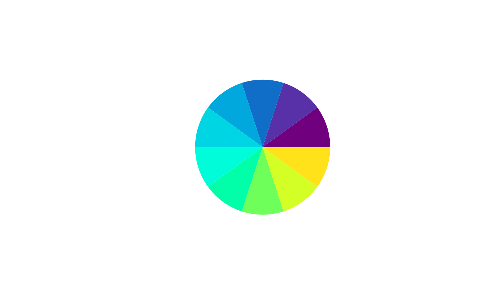
#> [1] "#71007FFF" "#5831A8FF" "#106EC9FF" "#00A8DEFF" "#00D5E4FF" "#00FCD8FF"
#> [7] "#00FFA8FF" "#6EFF5AFF" "#D3FF27FF" "#FFE21AFF"
colorify(colors = "viridis", n = 10, plot = TRUE, lf = .9)
#> [1] "#44004DFF" "#3B2865FF" "#164879FF" "#006585FF" "#008089FF" "#009782FF"
#> [7] "#00AB71FF" "#61BB55FF" "#A8C732FF" "#E4CC2EFF"
# TODO add examples for nn to vignette
colorify(colors = colorify(nn = Inf)(10), plot = TRUE) # basically random palette function
#> 256 colors generated
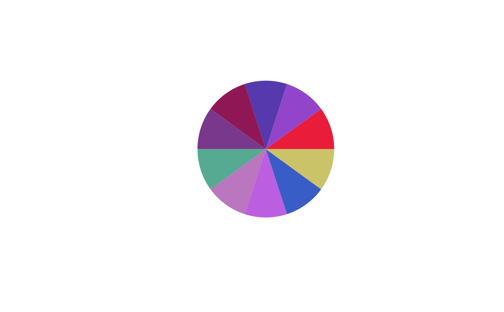
#> [1] "#E91C3AFF" "#9245CAFF" "#5639ACFF" "#8F1756FF" "#7A388CFF" "#55AA91FF"
#> [7] "#BA76BEFF" "#BC5EE0FF" "#395DC7FF" "#CBC368FF"
colorify(colors = colorify(nn = Inf, colors = c('red', 'white'))(10), plot = TRUE)
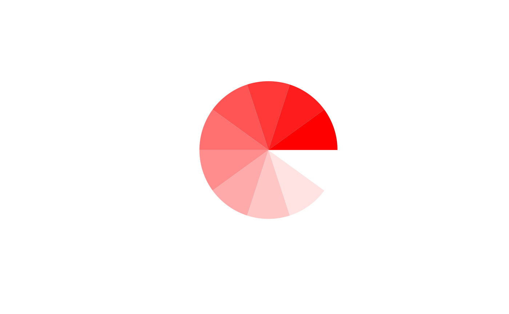
#> [1] "#FF0000FF" "#FF1C1CFF" "#FF3838FF" "#FF5555FF" "#FF7171FF" "#FF8D8DFF"
#> [7] "#FFAAAAFF" "#FFC6C6FF" "#FFE2E2FF" "#FFFFFFFF"
colorify(colors = colorify(nn = Inf, colors = c('red', 'white', 'blue'))(10), plot = TRUE)
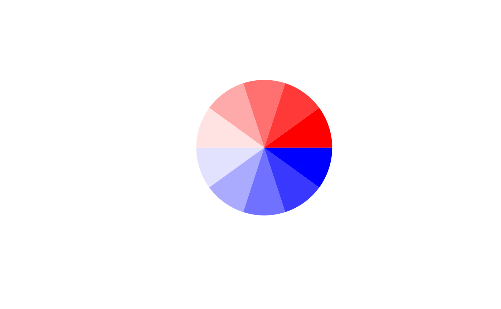
#> [1] "#FF0000FF" "#FF3838FF" "#FF7171FF" "#FFAAAAFF" "#FFE2E2FF" "#E2E2FFFF"
#> [7] "#AAAAFFFF" "#7171FFFF" "#3838FFFF" "#0000FFFF"
colorify(colors = colorify(colors = 'viridis', nn = Inf)(50), plot = TRUE)
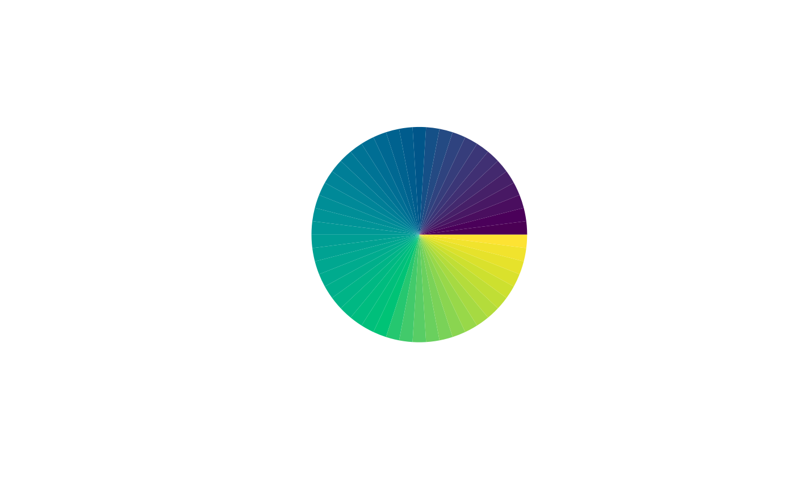
#> [1] "#4B0055FF" "#4B005AFF" "#4A0E5FFF" "#481864FF" "#462068FF" "#43296EFF"
#> [7] "#403073FF" "#3B3677FF" "#363D7BFF" "#2F437FFF" "#244A83FF" "#155087FF"
#> [13] "#00568AFF" "#005C8DFF" "#00628FFF" "#006892FF" "#006E94FF" "#007395FF"
#> [19] "#007996FF" "#007E97FF" "#008498FF" "#008998FF" "#008E97FF" "#009397FF"
#> [25] "#009896FF" "#009E94FF" "#00A292FF" "#00A790FF" "#00AB8EFF" "#00AF8BFF"
#> [31] "#00B487FF" "#00B883FF" "#00BC7FFF" "#00BF7BFF" "#00C376FF" "#25C770FF"
#> [37] "#42CA6BFF" "#58CD65FF" "#6AD05EFF" "#7AD258FF" "#8AD550FF" "#98D849FF"
#> [43] "#A6DA42FF" "#B4DC3BFF" "#C0DE35FF" "#CDE02FFF" "#DAE12CFF" "#E6E22BFF"
#> [49] "#F1E32DFF" "#FDE333FF"
## palette selected by name in colors[1],
## can add colors to selected palette,
## if n < length, remove colors , if greater generate
colorify(colors = c("Okabe-Ito", "red", "blue", "yellow"), plot = TRUE, n = 10)
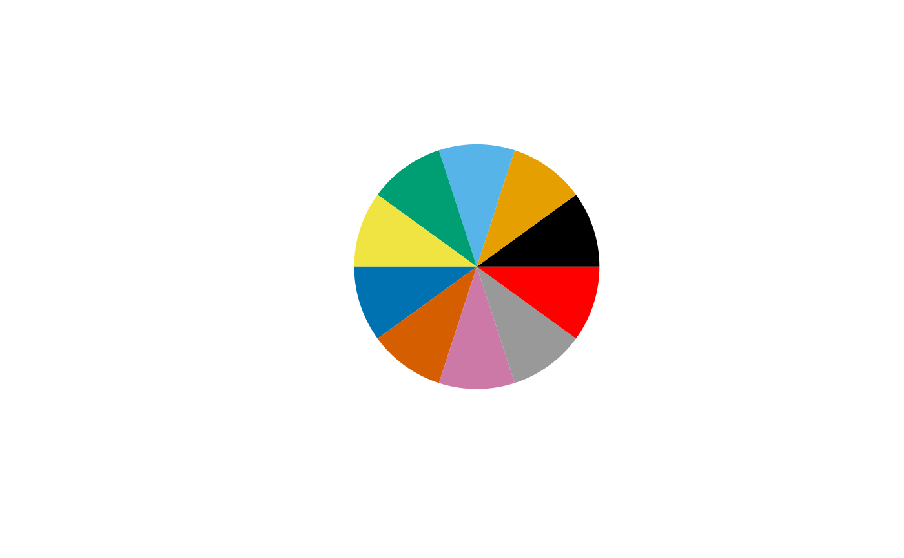
#> [1] "#000000FF" "#E69F00FF" "#56B4E9FF" "#009E73FF" "#F0E442FF" "#0072B2FF"
#> [7] "#D55E00FF" "#CC79A7FF" "#999999FF" "#FF0000FF"
## no adjustments to locked indices
colorify(colors = "Okabe-Ito", colors_lock = c(FALSE,FALSE,TRUE,TRUE), plot = TRUE, rv = -300)
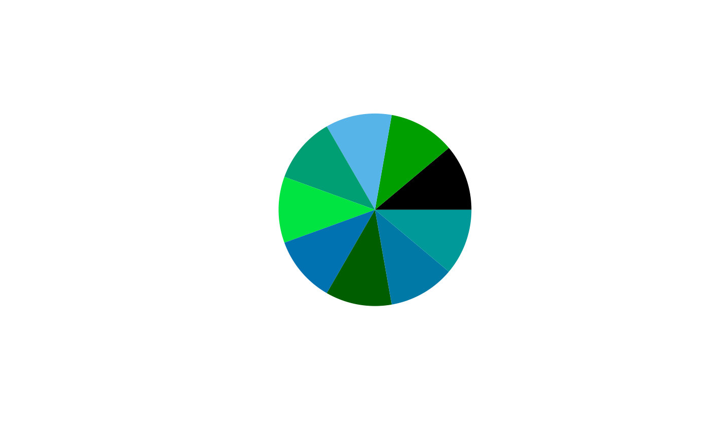
#> [1] "#000000FF" "#009F00FF" "#56B4E9FF" "#009E73FF" "#00E442FF" "#0072B2FF"
#> [7] "#005E00FF" "#0079A7FF" "#009999FF"
colorify(colors = "Okabe-Ito", colors_lock = c(FALSE,FALSE,TRUE,TRUE), plot = TRUE, rv = 300)
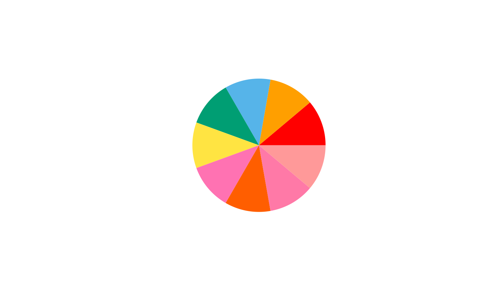
#> [1] "#FF0000FF" "#FF9F00FF" "#56B4E9FF" "#009E73FF" "#FFE442FF" "#FF72B2FF"
#> [7] "#FF5E00FF" "#FF79A7FF" "#FF9999FF"
## colors_lock and inversing
colors <- colorify(5, plot = TRUE)
#> 5 colors generated
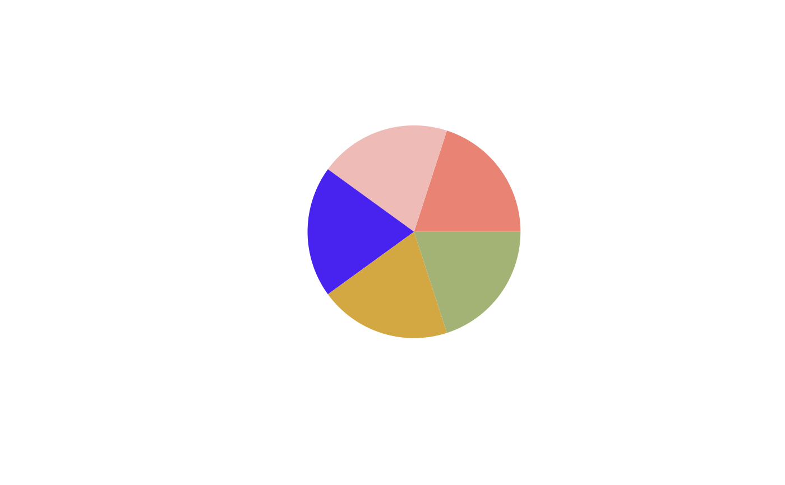
colorify(colors_lock = c(TRUE,TRUE), colors=colors, plot = TRUE, lf = .5)
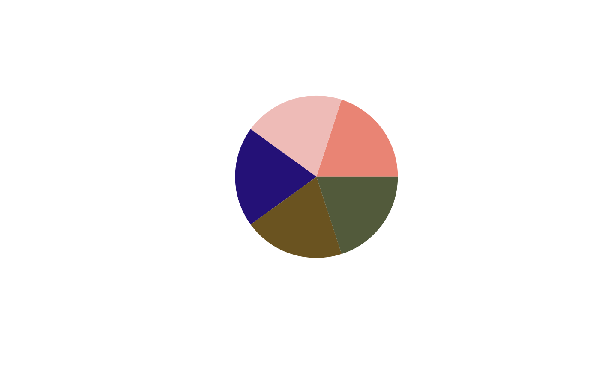
#> [1] "#E98474FF" "#EEBBB7FF" "#241177FF" "#6A5320FF" "#525A3BFF"
colorify(colors_lock = ! c(TRUE,FALSE,TRUE), colors=colors, plot = TRUE, lf = .5)
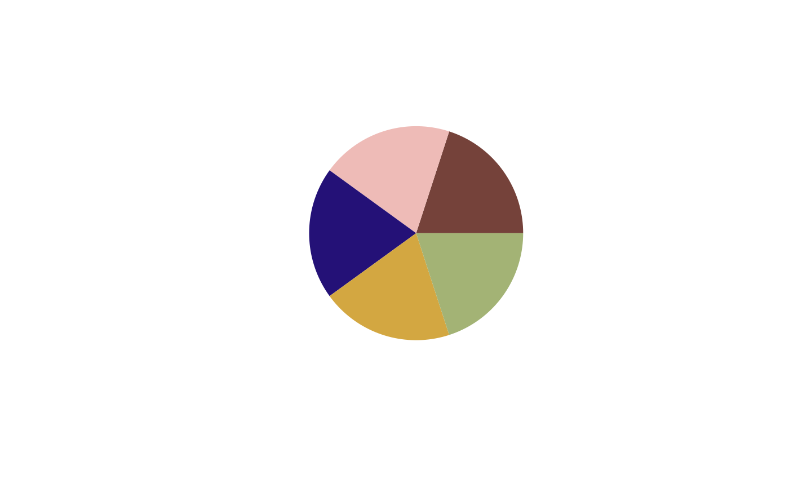
#> [1] "#75423AFF" "#EEBBB7FF" "#241177FF" "#D3A741FF" "#A3B375FF"
colorify(colors_lock = c(3,4), colors=colors, plot = TRUE, lf = .5)
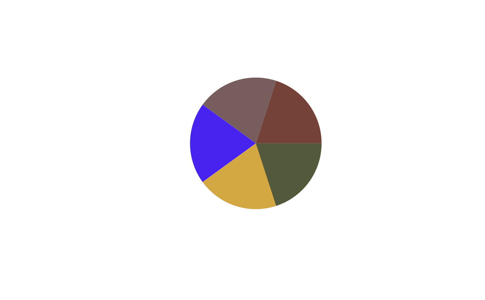
#> [1] "#75423AFF" "#775E5CFF" "#4822EEFF" "#D3A741FF" "#525A3BFF"
colorify(colors_lock = -c(3,4), colors=colors, plot = TRUE, lf = .5)
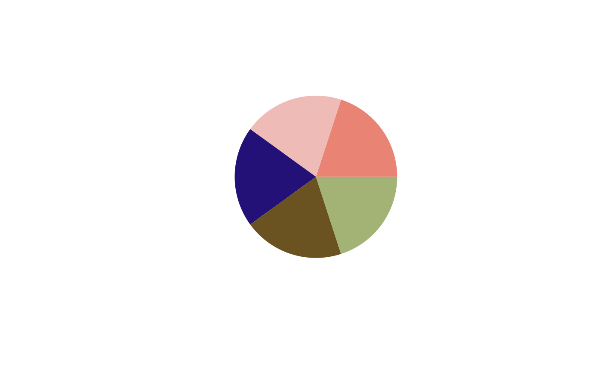
#> [1] "#E98474FF" "#EEBBB7FF" "#241177FF" "#6A5320FF" "#A3B375FF"
## rainbow
colorify(colors=grDevices::rainbow(100, s = .5), plot = TRUE)
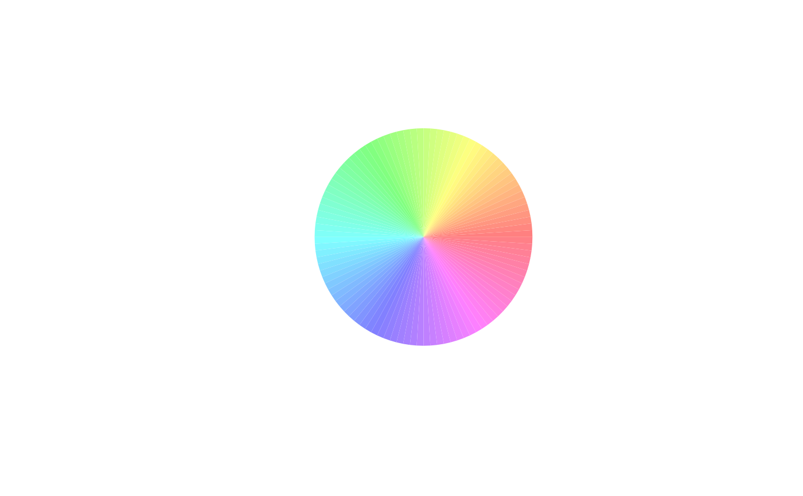
#> [1] "#FF8080FF" "#FF8780FF" "#FF8F80FF" "#FF9680FF" "#FF9E80FF" "#FFA680FF"
#> [7] "#FFAD80FF" "#FFB580FF" "#FFBD80FF" "#FFC480FF" "#FFCC80FF" "#FFD480FF"
#> [13] "#FFDB80FF" "#FFE380FF" "#FFEB80FF" "#FFF280FF" "#FFFA80FF" "#FCFF80FF"
#> [19] "#F5FF80FF" "#EDFF80FF" "#E5FF80FF" "#DEFF80FF" "#D6FF80FF" "#CFFF80FF"
#> [25] "#C7FF80FF" "#BFFF80FF" "#B8FF80FF" "#B0FF80FF" "#A8FF80FF" "#A1FF80FF"
#> [31] "#99FF80FF" "#91FF80FF" "#8AFF80FF" "#82FF80FF" "#80FF85FF" "#80FF8CFF"
#> [37] "#80FF94FF" "#80FF9CFF" "#80FFA3FF" "#80FFABFF" "#80FFB3FF" "#80FFBAFF"
#> [43] "#80FFC2FF" "#80FFC9FF" "#80FFD1FF" "#80FFD9FF" "#80FFE0FF" "#80FFE8FF"
#> [49] "#80FFF0FF" "#80FFF7FF" "#80FFFFFF" "#80F7FFFF" "#80F0FFFF" "#80E8FFFF"
#> [55] "#80E0FFFF" "#80D9FFFF" "#80D1FFFF" "#80C9FFFF" "#80C2FFFF" "#80BAFFFF"
#> [61] "#80B3FFFF" "#80ABFFFF" "#80A3FFFF" "#809CFFFF" "#8094FFFF" "#808CFFFF"
#> [67] "#8085FFFF" "#8280FFFF" "#8A80FFFF" "#9180FFFF" "#9980FFFF" "#A180FFFF"
#> [73] "#A880FFFF" "#B080FFFF" "#B880FFFF" "#BF80FFFF" "#C780FFFF" "#CF80FFFF"
#> [79] "#D680FFFF" "#DE80FFFF" "#E680FFFF" "#ED80FFFF" "#F580FFFF" "#FC80FFFF"
#> [85] "#FF80FAFF" "#FF80F2FF" "#FF80EBFF" "#FF80E3FF" "#FF80DBFF" "#FF80D4FF"
#> [91] "#FF80CCFF" "#FF80C4FF" "#FF80BDFF" "#FF80B5FF" "#FF80ADFF" "#FF80A6FF"
#> [97] "#FF809EFF" "#FF8096FF" "#FF808FFF" "#FF8087FF"
colorify(colors="rainbow", n = 100, sf = .5, plot = TRUE)
#> [1] "#FF8080FF" "#FF8780FF" "#FF8F80FF" "#FF9780FF" "#FF9E80FF" "#FFA680FF"
#> [7] "#FFAE80FF" "#FFB580FF" "#FFBD80FF" "#FFC480FF" "#FFCC80FF" "#FFD380FF"
#> [13] "#FFDC80FF" "#FFE380FF" "#FFEB80FF" "#FFF280FF" "#FFFA80FF" "#FDFF80FF"
#> [19] "#F5FF80FF" "#EDFF80FF" "#E5FF80FF" "#DEFF80FF" "#D6FF80FF" "#CFFF80FF"
#> [25] "#C7FF80FF" "#C0FF80FF" "#B7FF80FF" "#B0FF80FF" "#A9FF80FF" "#A1FF80FF"
#> [31] "#99FF80FF" "#92FF80FF" "#8AFF80FF" "#82FF80FF" "#80FF84FF" "#80FF8DFF"
#> [37] "#80FF94FF" "#80FF9CFF" "#80FFA3FF" "#80FFABFF" "#80FFB3FF" "#80FFBAFF"
#> [43] "#80FFC2FF" "#80FFCAFF" "#80FFD1FF" "#80FFD9FF" "#80FFE1FF" "#80FFE8FF"
#> [49] "#80FFF0FF" "#80FFF7FF" "#80FFFFFF" "#80F7FFFF" "#80EFFFFF" "#80E8FFFF"
#> [55] "#80E1FFFF" "#80D9FFFF" "#80D1FFFF" "#80CAFFFF" "#80C2FFFF" "#80BAFFFF"
#> [61] "#80B3FFFF" "#80ABFFFF" "#80A3FFFF" "#809CFFFF" "#8094FFFF" "#808CFFFF"
#> [67] "#8085FFFF" "#8280FFFF" "#8980FFFF" "#9280FFFF" "#9980FFFF" "#A180FFFF"
#> [73] "#A880FFFF" "#B080FFFF" "#B880FFFF" "#C080FFFF" "#C780FFFF" "#CE80FFFF"
#> [79] "#D680FFFF" "#DE80FFFF" "#E680FFFF" "#ED80FFFF" "#F580FFFF" "#FD80FFFF"
#> [85] "#FF80FAFF" "#FF80F3FF" "#FF80EAFF" "#FF80E3FF" "#FF80DCFF" "#FF80D3FF"
#> [91] "#FF80CCFF" "#FF80C4FF" "#FF80BDFF" "#FF80B5FF" "#FF80AEFF" "#FF80A6FF"
#> [97] "#FF809EFF" "#FF8097FF" "#FF808FFF" "#FF8087FF"
colorify(colors=grDevices::rainbow(100, v = .5), plot = TRUE)
#> [1] "#800000FF" "#800800FF" "#800F00FF" "#801700FF" "#801F00FF" "#802600FF"
#> [7] "#802E00FF" "#803600FF" "#803D00FF" "#804500FF" "#804D00FF" "#805400FF"
#> [13] "#805C00FF" "#806300FF" "#806B00FF" "#807300FF" "#807A00FF" "#7D8000FF"
#> [19] "#758000FF" "#6E8000FF" "#668000FF" "#5E8000FF" "#578000FF" "#4F8000FF"
#> [25] "#478000FF" "#408000FF" "#388000FF" "#308000FF" "#298000FF" "#218000FF"
#> [31] "#1A8000FF" "#128000FF" "#0A8000FF" "#038000FF" "#008005FF" "#00800DFF"
#> [37] "#008014FF" "#00801CFF" "#008024FF" "#00802BFF" "#008033FF" "#00803BFF"
#> [43] "#008042FF" "#00804AFF" "#008052FF" "#008059FF" "#008061FF" "#008069FF"
#> [49] "#008070FF" "#008078FF" "#008080FF" "#007880FF" "#007080FF" "#006980FF"
#> [55] "#006180FF" "#005980FF" "#005280FF" "#004A80FF" "#004280FF" "#003B80FF"
#> [61] "#003380FF" "#002B80FF" "#002480FF" "#001C80FF" "#001480FF" "#000D80FF"
#> [67] "#000580FF" "#030080FF" "#0A0080FF" "#120080FF" "#1A0080FF" "#210080FF"
#> [73] "#290080FF" "#300080FF" "#380080FF" "#400080FF" "#470080FF" "#4F0080FF"
#> [79] "#570080FF" "#5E0080FF" "#660080FF" "#6E0080FF" "#750080FF" "#7D0080FF"
#> [85] "#80007AFF" "#800073FF" "#80006BFF" "#800063FF" "#80005CFF" "#800054FF"
#> [91] "#80004CFF" "#800045FF" "#80003DFF" "#800036FF" "#80002EFF" "#800026FF"
#> [97] "#80001FFF" "#800017FF" "#80000FFF" "#800008FF"
colorify(colors="rainbow", n = 100, lf = .5, plot = TRUE)
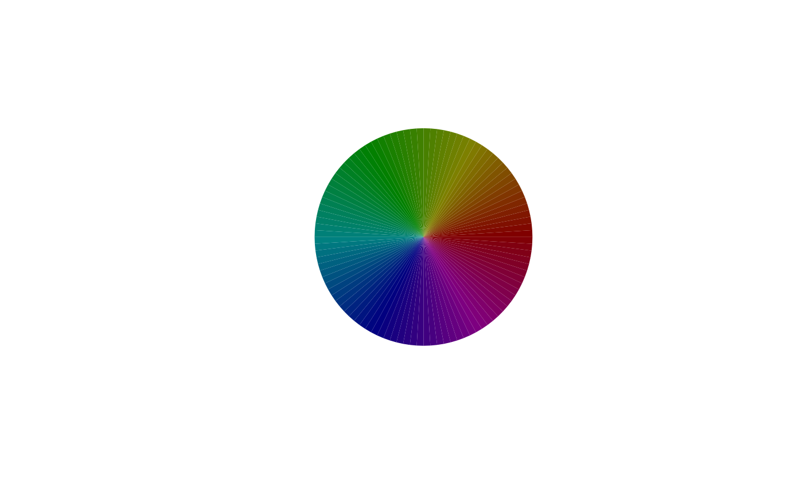
#> [1] "#800000FF" "#800800FF" "#801000FF" "#801700FF" "#801F00FF" "#802700FF"
#> [7] "#802E00FF" "#803600FF" "#803D00FF" "#804500FF" "#804D00FF" "#805400FF"
#> [13] "#805C00FF" "#806400FF" "#806B00FF" "#807200FF" "#807A00FF" "#7D8000FF"
#> [19] "#758000FF" "#6E8000FF" "#668000FF" "#5F8000FF" "#578000FF" "#4F8000FF"
#> [25] "#488000FF" "#408000FF" "#388000FF" "#318000FF" "#298000FF" "#218000FF"
#> [31] "#1A8000FF" "#128000FF" "#0A8000FF" "#038000FF" "#008005FF" "#00800DFF"
#> [37] "#008014FF" "#00801CFF" "#008023FF" "#00802CFF" "#008033FF" "#00803BFF"
#> [43] "#008042FF" "#00804AFF" "#008052FF" "#00805AFF" "#008061FF" "#008068FF"
#> [49] "#008070FF" "#008078FF" "#008080FF" "#007880FF" "#007080FF" "#006880FF"
#> [55] "#006180FF" "#005980FF" "#005280FF" "#004A80FF" "#004280FF" "#003B80FF"
#> [61] "#003380FF" "#002C80FF" "#002380FF" "#001C80FF" "#001480FF" "#000C80FF"
#> [67] "#000580FF" "#020080FF" "#0A0080FF" "#120080FF" "#190080FF" "#210080FF"
#> [73] "#290080FF" "#310080FF" "#380080FF" "#400080FF" "#470080FF" "#4F0080FF"
#> [79] "#570080FF" "#5F0080FF" "#660080FF" "#6D0080FF" "#760080FF" "#7D0080FF"
#> [85] "#80007AFF" "#800073FF" "#80006BFF" "#800063FF" "#80005CFF" "#800054FF"
#> [91] "#80004CFF" "#800045FF" "#80003DFF" "#800036FF" "#80002EFF" "#800026FF"
#> [97] "#80001FFF" "#800017FF" "#800010FF" "#800007FF"
colorify(colors=grDevices::rainbow(100, start = .25, end = .75), plot = TRUE)
#> [1] "#80FF00FF" "#78FF00FF" "#70FF00FF" "#68FF00FF" "#61FF00FF" "#59FF00FF"
#> [7] "#51FF00FF" "#49FF00FF" "#42FF00FF" "#3AFF00FF" "#32FF00FF" "#2AFF00FF"
#> [13] "#23FF00FF" "#1BFF00FF" "#13FF00FF" "#0CFF00FF" "#04FF00FF" "#00FF04FF"
#> [19] "#00FF0CFF" "#00FF13FF" "#00FF1BFF" "#00FF23FF" "#00FF2AFF" "#00FF32FF"
#> [25] "#00FF3AFF" "#00FF42FF" "#00FF49FF" "#00FF51FF" "#00FF59FF" "#00FF61FF"
#> [31] "#00FF68FF" "#00FF70FF" "#00FF78FF" "#00FF80FF" "#00FF87FF" "#00FF8FFF"
#> [37] "#00FF97FF" "#00FF9EFF" "#00FFA6FF" "#00FFAEFF" "#00FFB6FF" "#00FFBDFF"
#> [43] "#00FFC5FF" "#00FFCDFF" "#00FFD4FF" "#00FFDCFF" "#00FFE4FF" "#00FFECFF"
#> [49] "#00FFF3FF" "#00FFFBFF" "#00FBFFFF" "#00F3FFFF" "#00ECFFFF" "#00E4FFFF"
#> [55] "#00DCFFFF" "#00D4FFFF" "#00CDFFFF" "#00C5FFFF" "#00BDFFFF" "#00B6FFFF"
#> [61] "#00AEFFFF" "#00A6FFFF" "#009EFFFF" "#0097FFFF" "#008FFFFF" "#0087FFFF"
#> [67] "#0080FFFF" "#0078FFFF" "#0070FFFF" "#0068FFFF" "#0061FFFF" "#0059FFFF"
#> [73] "#0051FFFF" "#0049FFFF" "#0042FFFF" "#003AFFFF" "#0032FFFF" "#002BFFFF"
#> [79] "#0023FFFF" "#001BFFFF" "#0013FFFF" "#000CFFFF" "#0004FFFF" "#0400FFFF"
#> [85] "#0C00FFFF" "#1300FFFF" "#1B00FFFF" "#2300FFFF" "#2A00FFFF" "#3200FFFF"
#> [91] "#3A00FFFF" "#4200FFFF" "#4900FFFF" "#5100FFFF" "#5900FFFF" "#6100FFFF"
#> [97] "#6800FFFF" "#7000FFFF" "#7800FFFF" "#8000FFFF"
colorify(colors=grDevices::rainbow(100)[25:75], plot = TRUE)
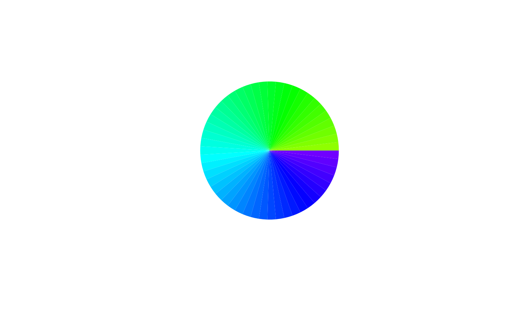
#> [1] "#8FFF00FF" "#80FF00FF" "#70FF00FF" "#61FF00FF" "#52FF00FF" "#42FF00FF"
#> [7] "#33FF00FF" "#24FF00FF" "#14FF00FF" "#05FF00FF" "#00FF0AFF" "#00FF1AFF"
#> [13] "#00FF29FF" "#00FF38FF" "#00FF47FF" "#00FF57FF" "#00FF66FF" "#00FF75FF"
#> [19] "#00FF85FF" "#00FF94FF" "#00FFA3FF" "#00FFB3FF" "#00FFC2FF" "#00FFD1FF"
#> [25] "#00FFE0FF" "#00FFF0FF" "#00FFFFFF" "#00F0FFFF" "#00E0FFFF" "#00D1FFFF"
#> [31] "#00C2FFFF" "#00B2FFFF" "#00A3FFFF" "#0094FFFF" "#0085FFFF" "#0075FFFF"
#> [37] "#0066FFFF" "#0057FFFF" "#0047FFFF" "#0038FFFF" "#0029FFFF" "#0019FFFF"
#> [43] "#000AFFFF" "#0500FFFF" "#1400FFFF" "#2400FFFF" "#3300FFFF" "#4200FFFF"
#> [49] "#5200FFFF" "#6100FFFF" "#7000FFFF"
## order
colorify(10, plot = TRUE, order = 1) # default
#> 10 colors generated
 #> [1] "#E974E6FF" "#EEB723FF" "#48EEFCFF" "#D341F1FF" "#A37515FF" "#84EF83FF"
#> [7] "#BBF963FF" "#221DE6FF" "#A77971FF" "#B38ED5FF"
colorify(10, plot = TRUE, order = 0) # random
#> 10 colors generated
#> [1] "#E974E6FF" "#EEB723FF" "#48EEFCFF" "#D341F1FF" "#A37515FF" "#84EF83FF"
#> [7] "#BBF963FF" "#221DE6FF" "#A77971FF" "#B38ED5FF"
colorify(10, plot = TRUE, order = 0) # random
#> 10 colors generated
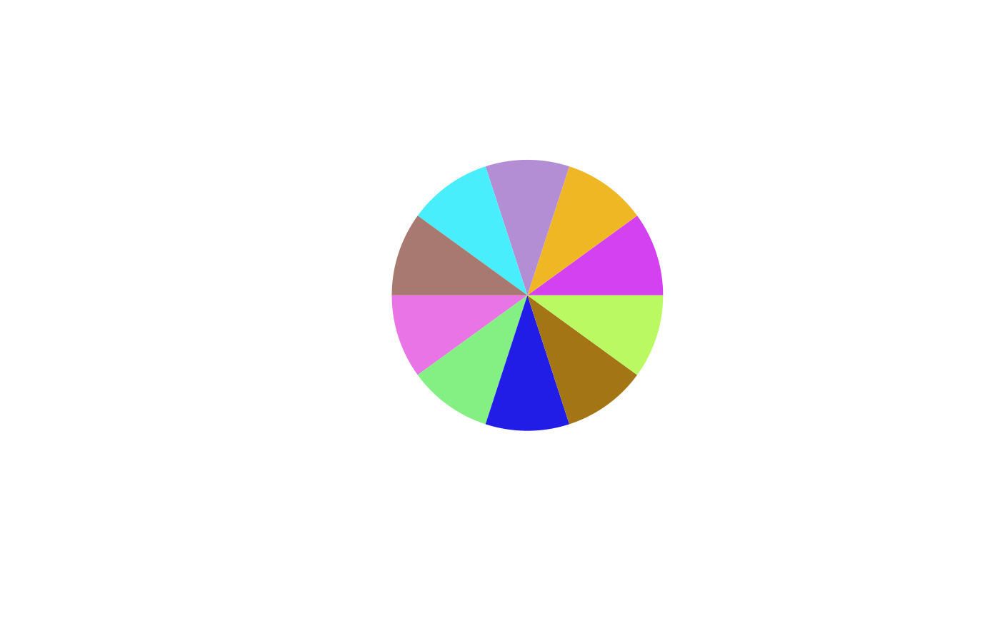
#> [1] "#D341F1FF" "#EEB723FF" "#B38ED5FF" "#48EEFCFF" "#A77971FF" "#E974E6FF"
#> [7] "#84EF83FF" "#221DE6FF" "#A37515FF" "#BBF963FF"
colorify(10, plot = TRUE, order = -1) # reverse
#> 10 colors generated
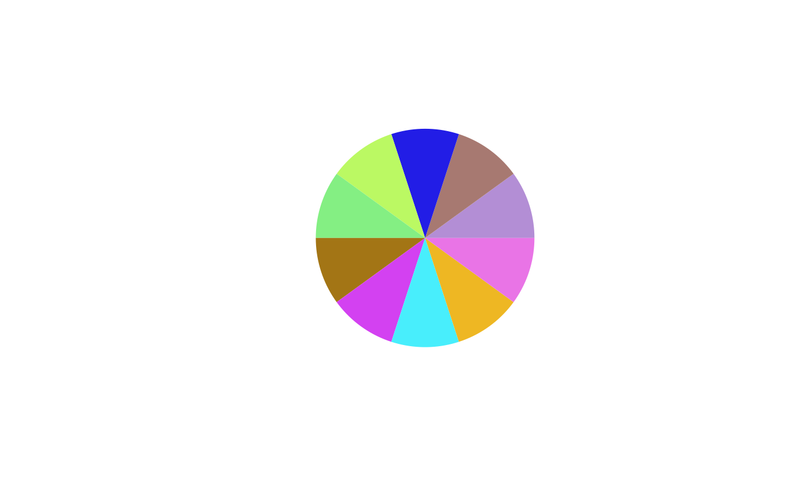
#> [1] "#B38ED5FF" "#A77971FF" "#221DE6FF" "#BBF963FF" "#84EF83FF" "#A37515FF"
#> [7] "#D341F1FF" "#48EEFCFF" "#EEB723FF" "#E974E6FF"
colorify(10, plot = TRUE, order = -3) # negative shift
#> 10 colors generated
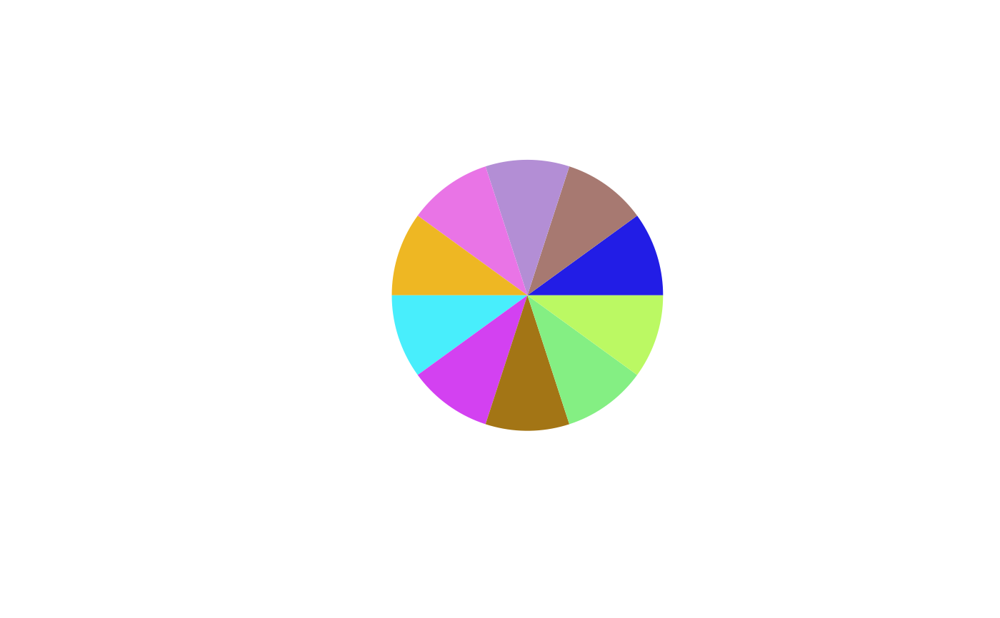
#> [1] "#221DE6FF" "#A77971FF" "#B38ED5FF" "#E974E6FF" "#EEB723FF" "#48EEFCFF"
#> [7] "#D341F1FF" "#A37515FF" "#84EF83FF" "#BBF963FF"
colorify(10, plot = TRUE, order = 12) # > n
#> 10 colors generated
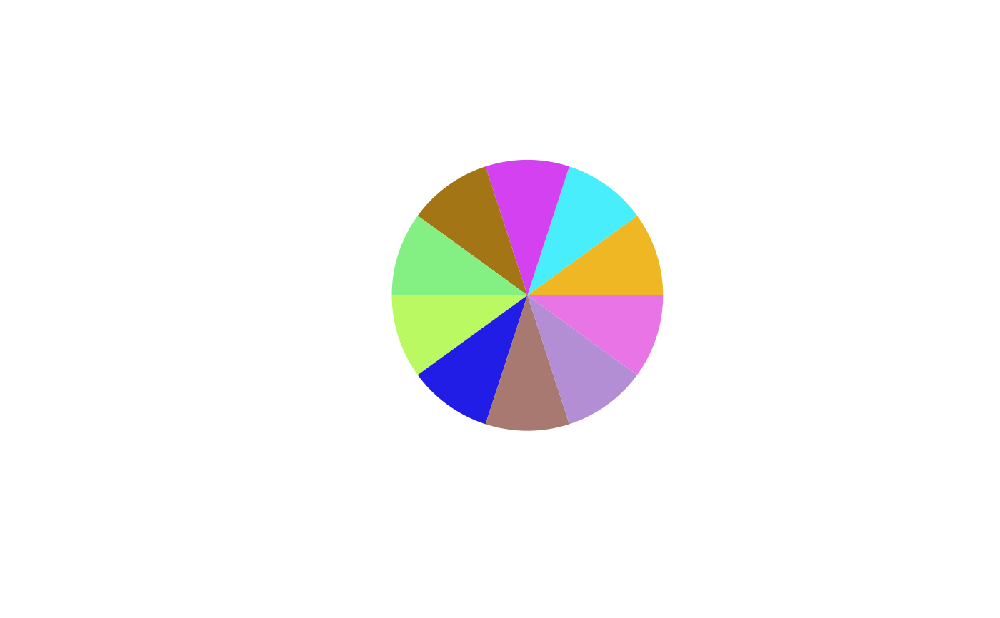
#> [1] "#EEB723FF" "#48EEFCFF" "#D341F1FF" "#A37515FF" "#84EF83FF" "#BBF963FF"
#> [7] "#221DE6FF" "#A77971FF" "#B38ED5FF" "#E974E6FF"
## call order
# Note that parameter call order within the function call matters,
# see examples and vignette:
# rv = 20 then rf = 1.2 can be different then
# rf = 1.2 then rv = 20
# TODO add example to vignette
colors_map <- c(-5, 0, 10)
colors <- c("red", "white", "blue")
if (requireNamespace('circlize'))
color_bar <-
circlize::colorRamp2(colors_map, colors)(seq(-5, 10, length.out = 100))
#> Loading required namespace: circlize
color_bar <- colorify(
colors = colors,
colors_map = colors_map,
space = "Lab")(seq(-5, 10, length.out = 100)) # circlize::colorRamp2 style
graphics::image(1:100, 1, as.matrix(1:100),
col = color_bar,
axes = FALSE,
main = "Color Mapping using circlize::colorRamp2")
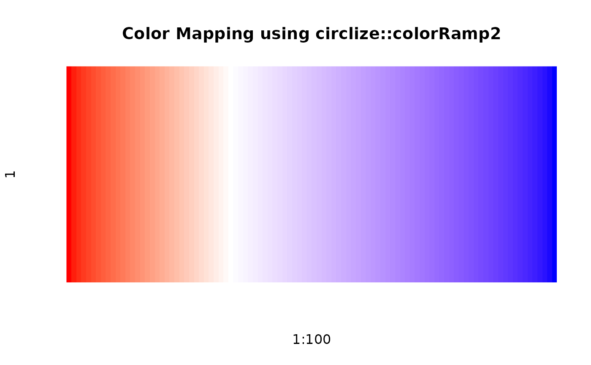
## named base R/hexcode
colorifunction <- colorify_pal(colors = c('red', '#FFFFFF', 'blue'))
colorify(colors = colorifunction(10), plot = TRUE)
 #> [1] "#FF0000FF" "#FF3838FF" "#FF7171FF" "#FFAAAAFF" "#FFE2E2FF" "#E2E2FFFF"
#> [7] "#AAAAFFFF" "#7171FFFF" "#3838FFFF" "#0000FFFF"
## empty for random
colorifunction <- colorify_pal()
colorify(colors = colorifunction(10), plot = TRUE)
#> 256 colors generated
#> [1] "#FF0000FF" "#FF3838FF" "#FF7171FF" "#FFAAAAFF" "#FFE2E2FF" "#E2E2FFFF"
#> [7] "#AAAAFFFF" "#7171FFFF" "#3838FFFF" "#0000FFFF"
## empty for random
colorifunction <- colorify_pal()
colorify(colors = colorifunction(10), plot = TRUE)
#> 256 colors generated
 #> [1] "#E91C3AFF" "#9245CAFF" "#5639ACFF" "#8F1756FF" "#7A388CFF" "#55AA91FF"
#> [7] "#BA76BEFF" "#BC5EE0FF" "#395DC7FF" "#CBC368FF"
## named colors and palette(s)
colorifunction <- colorify_pal(colors = c('green', 'viridis', 'rainbow', 'yellow'), plot = TRUE)
colorify(colors = colorifunction(100), plot = TRUE)
#> [1] "#E91C3AFF" "#9245CAFF" "#5639ACFF" "#8F1756FF" "#7A388CFF" "#55AA91FF"
#> [7] "#BA76BEFF" "#BC5EE0FF" "#395DC7FF" "#CBC368FF"
## named colors and palette(s)
colorifunction <- colorify_pal(colors = c('green', 'viridis', 'rainbow', 'yellow'), plot = TRUE)
colorify(colors = colorifunction(100), plot = TRUE)
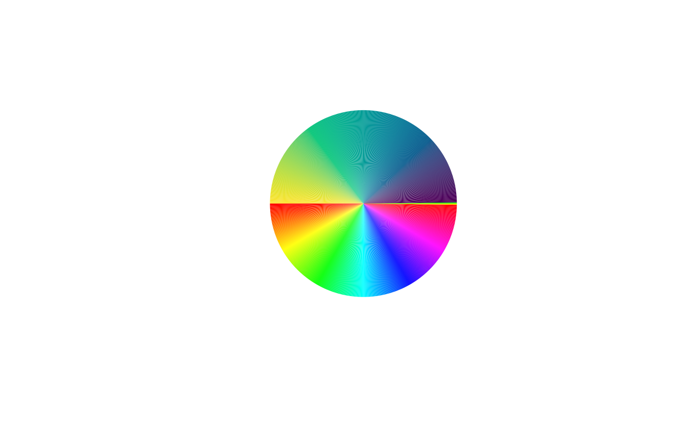
#> [1] "#00FF00FF" "#4B0059FF" "#4A0B5EFF" "#481763FF" "#471F67FF" "#44266CFF"
#> [7] "#402E72FF" "#3C3576FF" "#373B7AFF" "#30427EFF" "#274882FF" "#194F86FF"
#> [13] "#005589FF" "#005A8CFF" "#00608FFF" "#006691FF" "#006C93FF" "#007295FF"
#> [19] "#007896FF" "#007D97FF" "#008298FF" "#008798FF" "#008D98FF" "#009297FF"
#> [25] "#009796FF" "#009C95FF" "#00A093FF" "#00A591FF" "#00AA8EFF" "#00AE8BFF"
#> [31] "#00B288FF" "#00B685FF" "#00BA81FF" "#00BE7CFF" "#00C277FF" "#13C572FF"
#> [37] "#3AC96DFF" "#50CC67FF" "#64CF61FF" "#75D25AFF" "#84D453FF" "#93D74CFF"
#> [43] "#A1D945FF" "#AEDB3EFF" "#BCDD36FF" "#C8DF30FF" "#D5E12DFF" "#E1E22BFF"
#> [49] "#EDE32CFF" "#F8E330FF" "#FF0C00FF" "#FF2B00FF" "#FF4A00FF" "#FF6900FF"
#> [55] "#FF8700FF" "#FFA700FF" "#FFC600FF" "#FFE500FF" "#F9FF00FF" "#DAFF00FF"
#> [61] "#BBFF00FF" "#9CFF00FF" "#7EFF00FF" "#5FFF00FF" "#40FF00FF" "#21FF00FF"
#> [67] "#01FF00FF" "#00FF1DFF" "#00FF3CFF" "#00FF5BFF" "#00FF7AFF" "#00FF98FF"
#> [73] "#00FFB7FF" "#00FFD6FF" "#00FFF5FF" "#00E9FFFF" "#00CAFFFF" "#00AAFFFF"
#> [79] "#008BFFFF" "#006DFFFF" "#004EFFFF" "#002FFFFF" "#0010FFFF" "#0E00FFFF"
#> [85] "#2D00FFFF" "#4C00FFFF" "#6B00FFFF" "#8900FFFF" "#A900FFFF" "#C800FFFF"
#> [91] "#E700FFFF" "#FF00F7FF" "#FF00D8FF" "#FF00B9FF" "#FF009AFF" "#FF007CFF"
#> [97] "#FF005DFF" "#FF003EFF" "#FF001FFF" "#FFFF00FF"